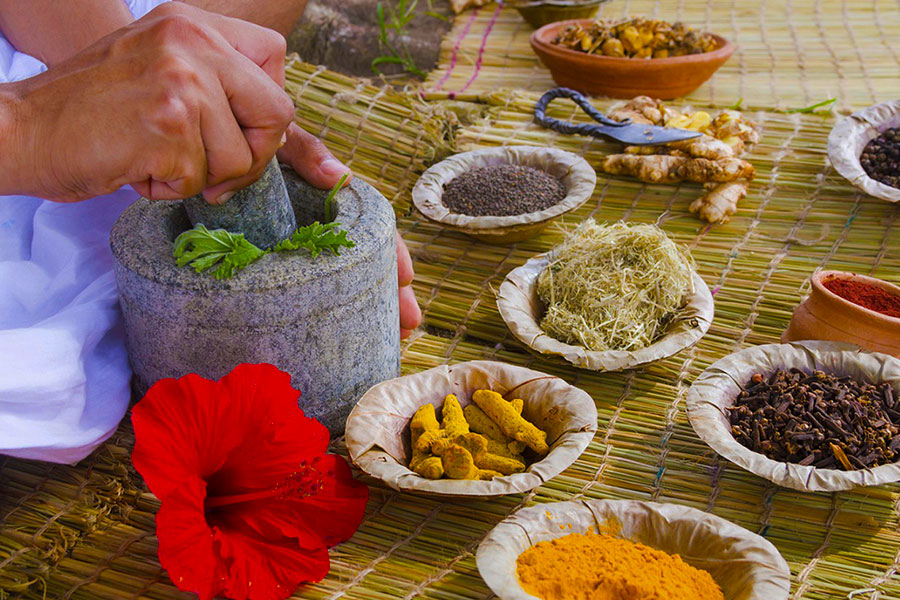

Información Nutrimental

La medicina tradicional es el conjunto de conocimientos y prácticas utilizadas por comunidades para tratar enfermedades con recursos naturales.
¿Por qué es importante?
- Preserva saberes ancestrales: Conocimientos transmitidos de generación en generación.
- Utiliza ingredientes naturales: Hierbas, raíces y minerales.
- Complementa la medicina moderna: Aporta alternativas menos invasivas.
- Accesible y económica: Ideal para comunidades rurales.
- Promueve el bienestar holístico: Integra la conexión entre cuerpo y espíritu.
¿Por qué debería usarse?
Muchas prácticas de la medicina tradicional han demostrado eficacia y pueden complementarse con la medicina convencional. Sin embargo, es recomendable consultar a un especialista antes de su uso.